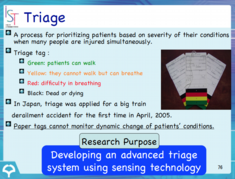
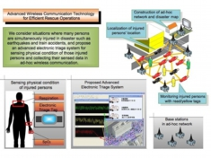
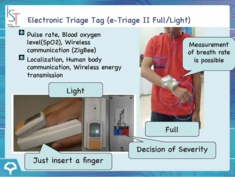

Efficient Rescue Operation
What's "triage" ?
Triage is a process of prioritizing patients based on the severity of their physical condition when many persons are simultaneously injured in disaster. This process is used for rationing patient treatment efficiently when medical resources are insufficient for all to be treated immediately. The categorization of patients based on the severity of their injuries can be aided with the use of printed triage tags or colored flagging.

{kind=link}
Rescue Operations in Disaster
Simple triage is usually used when a mass-casualty incident occurs in order to sort injured persons into those who need critical attention and immediate transport to the hospital and those with less serious injuries.

Even if we can sort injured persons using printed triage tags, it is not easy for rescue parties and doctors to precisely find patients with serious injuries in the scene of disaster.
{kind=link}
Etriage : Designing Advanced Electronic Triage System for Efficient Rescue Operations
In this project, we consider situations where many persons are simultaneously injured in disaster such as earthquakes and train accidents, and propose an advanced electronic triage system for sensing physical condition of those injured persons and collecting their sensed data in ad-hoc wireless communication. The triage system presents dynamic change of injured persons' location and physical condition on monitors in real time. Our research aims to improve efficiency of rescue operations in disaster using the proposed advanced wireless communication technology.
News Story
Our project "Designing Advanced Electronic Triage System for Efficient Rescue Operations" was introduced in the morning news of NHK (Japan Broadcasting Corporation) on Sept. 9, 2009.

{kind=link}
Related URLs for our CREST Project
Our project's Home Page
http://www.etriage.jp/
Japan Science and Technology Agency (JST)
Core Research of Evolutional Science & Technology (CREST)
http://www.jst.go.jp/kisoken/crest/en/
Research Area of Advanced Integrated Sensing Technologies in CREST
http://www.sen.jst.go.jp/ (in Japanese)
Video of Etriage System
Click Below Image (188MB)
[Selected Publications]
T. Higashino, A. Uchiyama and K. Yasumoto : "eTriage: A Wireless Communication Service Platform for Advanced Rescue Operations", Proc. of ACM Workshop on Internet of Things and Service Platforms (IoTSP 2011), 2011. (Invited Paper/Keynote Speech)
A. Kashiyama, A. Uchiyama, and T. Higashino : "Depth Limited Treatment Planning and Scheduling for Electronic Triage System in MCI", Proc. of Int. Conf. on Wireless Mobile Communication and Healthcare (MobiHealth 2012), 2012.
A. Uchiyama, T. Hirao, H. Yamaguchi, and T. Higashino : "Image Sensor Communication for Patient ID Recognition Using Mobile Devices", Proc. of Int. Workshop on Sensing Applications on Mobile Phones (PhoneSense 2012), 2012.
S. Minamimoto, S. Fujii, H. Yamaguchi and T. Higashino : "Map Estimation Using GPS-equipped Mobile Wireless Nodes", Pervasive and Mobile Computing, Vol.6, No.6, pp.623-641, 2010.
K. Nakata, K. Maeda, T. Umedu, A. Hiromori, H. Yamaguchi and T. Higashino : "Modeling and Evaluation of Rescue Operations using Mobile Communication Devices", Proc. of 23rd ACM/IEEE/SCS Workshop on Principles of Advanced and Distributed Simulation (PADS 2009), pp.64-71, 2009.
M. Nakamura, H. Urabe, A. Uchiyama, T. Umedu and T. Higashino : "Realistic Mobility Aware Information Gathering in Disaster Areas", Proc. of IEEE Wireless Communications and Networking Conf. 2008 (WCNC 2008), pp.3267-3272, 2008.